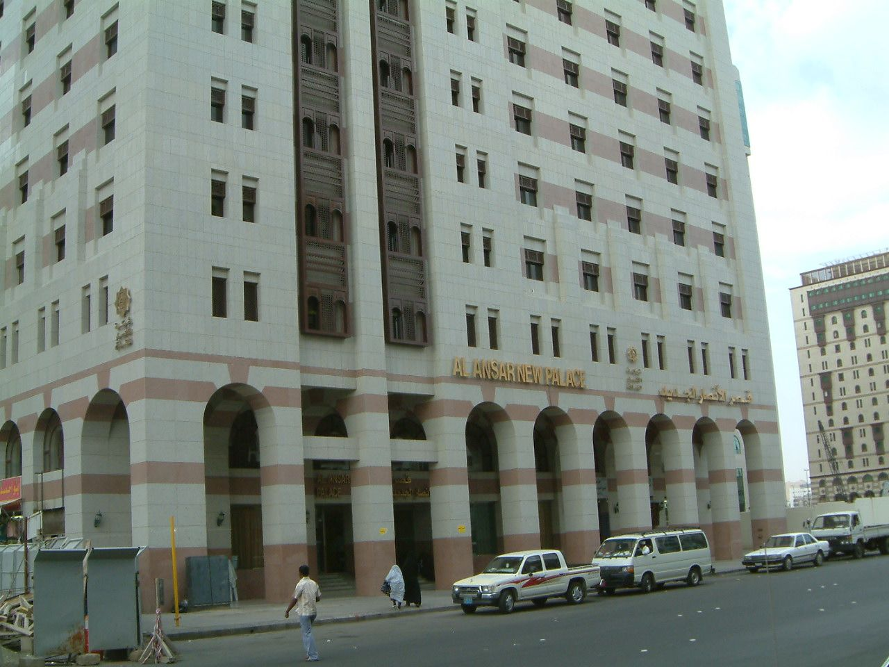
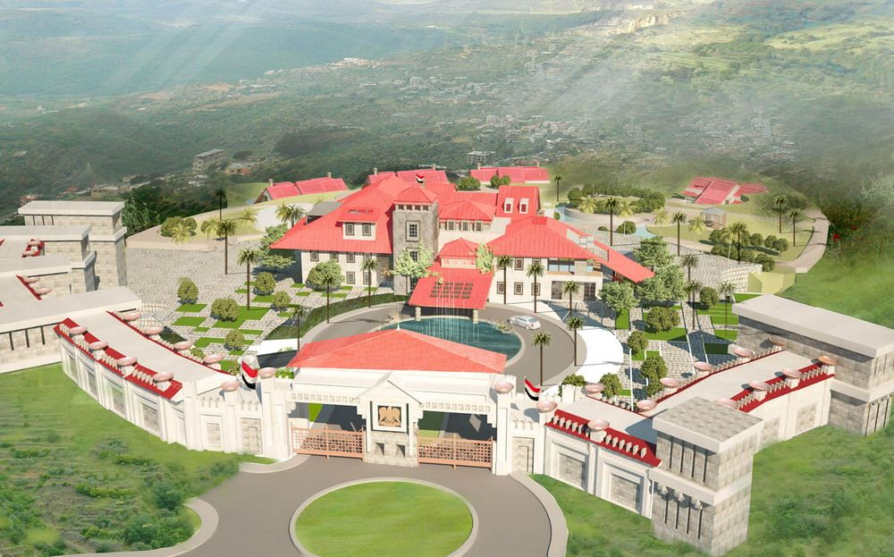

Prof. Dr. Amr Attia speaks at SHARE Kazakhstan in Almaty on 24 and 25 November. Read his profile
Prof. Dr. Amr Attia is Board Chairman of SHARE Egypt 2026, at the Grand Egyptian Museum on 13 and 14 December. News and events
1966 to 2026 · 60 years · Cairo · Riyadh · Dubai
Planning cities and destinations since 1966.
PUD Consultants plans cities, regions and tourism destinations, and designs the buildings and landscapes inside them. Prof. Dr. Abdallah Attia founded it in Cairo. Prof. Dr. Amr Attia leads it today, from Cairo, Riyadh and Dubai.
PUD plans cities, regions and destinations, and designs the buildings and landscapes inside them. We have planned new towns, coastal resorts, university campuses, heritage areas and the holy sites of Makkah.
Every project starts with the site and the people who will use it. Then we choose the team: planners, architects, economists and specialists from partner firms. Explore our expertise
Prof. Dr. Abdallah Attia at work. Illustrative recreation.Tut Amun Village, Lake Nasser, AswanMarina El Alamein, North Coast

Hotels and residential complexes, Al Madinah, 1998

Maria Heights Tourist Complex, Homs, 2008Pyramids Plateau Destination, Giza
Sixty years
Six decades, two generations.
1966
1966 to 1975
The first commissions
Prof. Dr. Abdallah Attia founds PUD in Cairo in 1966. A university commission and a bus terminal come first, then governorate plans and, by 1973, a competition win in Kuwait.
1966PUD is founded in Cairo by Prof. Dr. Abdallah Abdel Aziz Attia.
1969Lecture halls and research institute for Ain Shams University.
1972Al-Tahrir bus terminals in Cairo, and the regional and urban plan for Assiut governorate.
1976 to 1985
The coast takes shape
PUD plans tourism development along Egypt's North West Coast and designs Tut Amun on Lake Nasser, which PUD describes as Egypt's first tourist village. Marina El Alamein breaks ground in 1985.
1978Tourism development planning for the North West Coast region of Egypt.
1979Military Officers Club in Abu Dhabi, the first work in the UAE.
1981Tut Amun village hotel and resort on Lake Nasser, Aswan: designed in 1981, completed in 1984.
Marina El Alamein grows through three phases and wins the State Encouragement Prize in Architecture in 1990. Amr Attia joins in 1991, and Hilton Dahab on the Gulf of Aqaba is built in the mid-1990s.
1989Marina El Alamein Phase 2. A 2020 Springer paper calls the resort the first large-scale Egyptian recreation centre on the north-western coastline.
1990State Encouragement Prize in Architecture for Marina El Alamein.
Marina Matrouh, Latakia, Sheikh Zayed City and Historic Cairo. Amr Attia completes his PhD at UCL, serves on the technical committee of the Grand Egyptian Museum competition and becomes CEO in 2005.
1994Marina Matrouh programme begins; later phases follow to 2004.
1999Amr Attia awarded his PhD, University of London (UCL).
2002Grand Egyptian Museum international competition: Amr Attia serves on the technical committee.
New cities and campuses in Iraq, Syria and Egypt, strategic plans for Tanta and Mansoura, then Jeddah and Taif with AECOM Arabia. A marine field station on the Red Sea and the Green Star Hotels programme with GIZ put sustainability into the portfolio.
2007Strategic plans for Tanta and Mansoura; Amr Attia is an Eisenhower Fellow.
2008Master plans for Maria Heights (Homs), New Najaf City, City of Knowledge and Om El Baneen Oasis.
2009Abo Dabbab marine field station, and the Green Star Hotels initiative with GIZ.
Prof. Dr. Amr Attia co-founds PUD Saudi in Riyadh in 2018. The work reaches AlUla, Khaybar, Makkah, the Pyramids Plateau and the next phases of Egypt's New Administrative Capital.
2018PUD Saudi is co-founded in Riyadh.
2020Development brief for the Khaybar Heritage Area, scoping its master plan for the Royal Commission for AlUla, with WATG.
Prof. Dr. Abdallah Attia founded PUD in Cairo in 1966. He trained as an architect in Alexandria and took his doctorate at ETH Zurich.
He led Marina El Alamein from master plan to site supervision, designed Tut Amun on Lake Nasser and Hilton Dahab on the Gulf of Aqaba, and headed the Urban Planning Department at Ain Shams University. Marina El Alamein won the State Encouragement Prize in Architecture in 1990.
The footage here is an illustrative recreation made for the 60-year celebration. It is not archive film.
Prof. Dr. Amr AttiaCEO and Principal, PUD Consultants
The new chapter
Prof. Dr. Amr Attia
Prof. Dr. Amr Attia leads PUD, the practice his father founded. His master's thesis studied his father's Marina El Alamein, and his PhD examined tourism policy on Egypt's North West Coast. He spent nine years at AECOM Arabia, rising to Principal Director, and three at WATG as Vice President for the Middle East and Africa. In 2018 he co-founded PUD Saudi in Riyadh.
Today PUD advises on the Pyramids Plateau, the holy sites of Makkah, AlUla and the next phases of Egypt's New Administrative Capital. He is Professor of Urban Planning at Ain Shams University, an Eisenhower Fellow (2007) and Board Chairman of SHARE Egypt 2026.
Egypt and Saudi Arabia hold most of our work. We have also worked in Kuwait, Iraq, Syria, the UAE, Qatar, Iran, Cameroon, The Gambia and Germany. Every pin opens a project page. Sustainable tourism planning on the Red Sea.